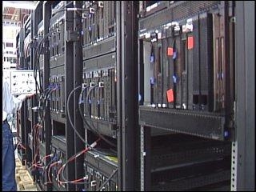

IBM ROADRUNNER:
Roadrunner was a supercomputer built by IBM for the Los Alamos National Laboratory in New Mexico, USA. The US$100-million Roadrunner was designed for a peak performance of 1.7 petaflops. It achieved 1.026 petaflops on May 25, 2008 to become the world's first TOP500 Linpack sustained 1.0 petaflops system.[2][3]
In November 2008, it reached a top performance of 1.456 petaflops, retaining its top spot in the TOP500 list.[4] It was also the fourth-most energy-efficient supercomputer in the world on the Supermicro Green500 list, with an operational rate of 444.94 megaflops per watt of power used. The hybrid Roadrunner design was then reused for several other energy efficient supercomputers.[5] Roadrunner was decommissioned by Los Alamos on March 31, 2013.[6] In its place, Los Alamos uses a supercomputer called Cielo, which was installed in 2010. Cielo is smaller and more energy efficient than Roadrunner, and cost $54 million.[6].
Overview[edit]
IBM built the computer for the U.S. Department of Energy's (DOE) National Nuclear Security Administration.[7][8] It was a hybrid design with 12,960 IBM PowerXCell 8i[9] and 6,480 AMD Opteron dual-core processors[10] in specially designed blade servers connected by Infiniband. The Roadrunner used Red Hat Enterprise Linux along with Fedora[11] as its operating systems and was managed with xCAT distributed computing software. It also used the Open MPI Message Passing Interface implementation.[12]
Roadrunner occupied approximately 296 server racks[13] which covered 560 square metres (6,000 sq ft)[14] and became operational in 2008. It was decommissioned March 31, 2013.[13] The DOE used the computer for simulating how nuclear materials age in order to predict whether the USA's aging arsenal of nuclear weapons are both safe and reliable. Other uses for the Roadrunner included the science, financial, automotive and aerospace industries.
Read more...
Hybrid design[edit]
Roadrunner differed from other contemporary supercomputers because it was the first hybrid supercomputer.[13] Previous supercomputers only used one processor architecture, since it was easier to design and program for. To realize the full potential of Roadrunner, all software had to be written specially for this hybrid architecture. The hybrid design consisted of dual-core Opteron server processors manufactured by AMD using the standard AMD64 architecture. Attached to each Opteron core is a PowerXCell 8i processor manufactured by IBM using Power Architecture and Cell technology. As a supercomputer, the Roadrunner was considered an Opteron cluster with Cell accelerators, as each node consists of a Cell attached to an Opteron core and the Opterons to each other.[15]
Development[edit]
Roadrunner was in development from 2002 and went online in 2006. Due to its novel design and complexity it was constructed in three phases and became fully operational in 2008. Its predecessor was a machine also developed at Los Alamos named Dark Horse.[16] This machine was one of the earliest hybrid architecture systems originally based on ARM and then moved to the Cell processor. It was entirely a 3D design, its design integrated 3D memory, networking, processors and a number of other technologies.
Phase 1[edit]
The first phase of the Roadrunner was building a standard Opteron based cluster, while evaluating the feasibility to further construct and program the future hybrid version. This Phase 1 Roadrunner reached 71 teraflops and was in full operation at Los Alamos National Laboratory in 2006.
Phase 2[edit]
Phase 2 known as ÒAAISÓ (Advanced Architecture Initial System) included building a small hybrid version of the finished system using an older version of the Cell processor. This phase was used to build prototype applications for the hybrid architecture. It went online in January 2007.
Phase 3[edit]
The goal of Phase 3 was to reach sustained performance in excess of 1 petaflops. Additional Opteron nodes and new PowerXCell processors were added to the design. These PowerXCell processors are five times as powerful as the Cell processors used in Phase 2. It was built to full scale at IBMÕs Poughkeepsie, New York facility,[1] where it broke the 1 petaflops barrier during its fourth attempt on May 25, 2008. The complete system was moved to its permanent location in New Mexico in the summer of 2008.[1]